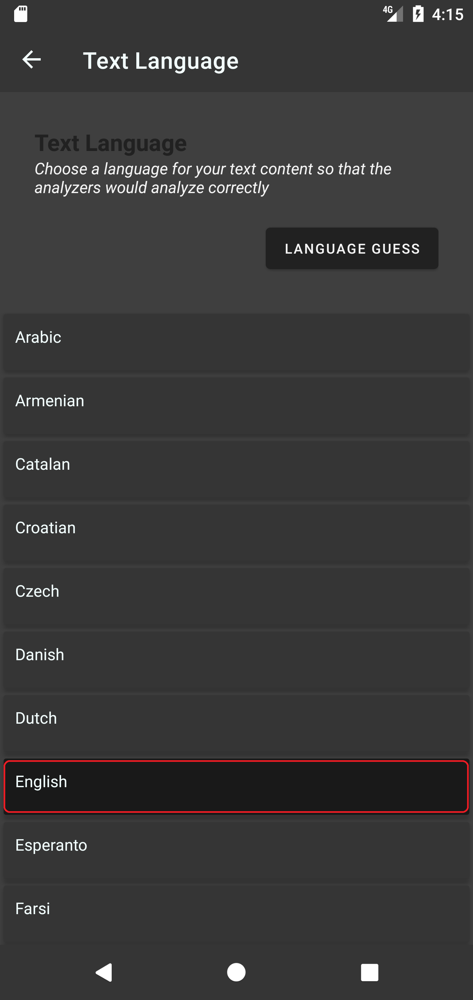
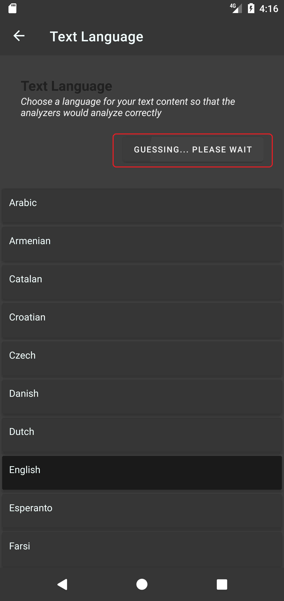
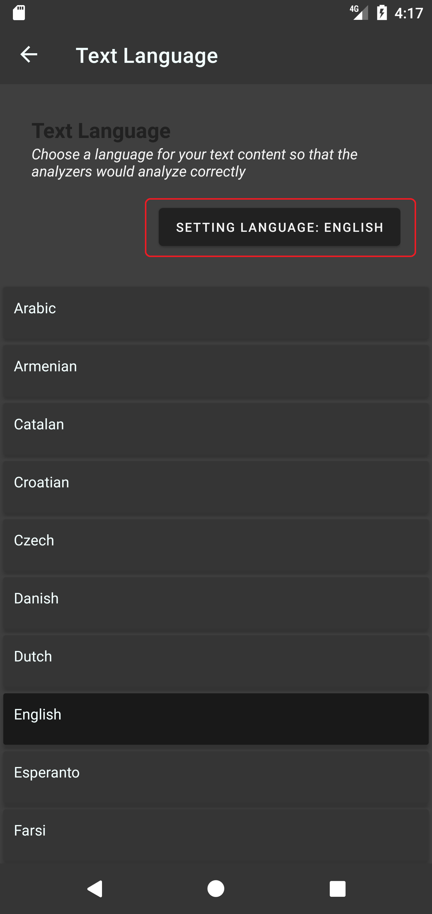

Editor
Writer Journal's Editor page is a powerful workstation where you can edit your document with lots of handy tools, it has Real-time analysers aka RTA and many formatting tools to help you compose your next masterpiece. Let's jump right into using it.
Document language
In Writer Journal, every document must have a language attribute associated with it, this language attribute is used by real-time analysers (RTA) to correctly analyze your document. Please follow the steps below to set a language for your document. (See the screenshot)
Click the language button on the top panel to open Text language page
In the Text language page, there is a list of languages supported by real-time analysers (RTA), to set a language for your current document, you can either select it manually in the list or click Language guess button to let Writer Journal guess the language for your text.
Real-time analysers (RTA)
At the time of writing this documentation, Writer Journal is the only app to provide this fantastic real-time text analyzing feature on the Android market. RTA is a dynamic feature designed especially for writers to help evaluate their text work in a variety of text analysis aspects. In terms of category, real-time analysers (RTA) can be divided into three big categories. Namely Counter , Density calculater and Custom analyzer. Please check the following list.
Counter:
Character
Word
Sentence
Paragraph
Unique words
Lexical unique words
Lexical words
Grammar words
Punctuation
Digit count
Emails
Links
Hashtags
Density calculater:
Unique words percentage
Lexical density
Lexical diversity
Custom analyser:
Typing speed
Longest unique word
Most frequent word
Most frequent lexical word
We believe most of the counters need no explanation because their name is self explaining. Followings are explanation for others:
Unique words : if any exactly same word appeared more than one time in your document, it will be counted as one.
Unique words percentage: the radio of unique words divided by total words
Lexical density: the radio of lexical words divided by total words
Lexical diversity: the radio of unique lexical words divided by total words
A well written English text usually has 56% or above lexical density than spoken text
You can toggle on or off any of these real-time analysers by following the steps below. (See the screenshot)
Click more options  in the editor page
in the editor page
Click RTA  to open real-time analyser page
to open real-time analyser page
Toggle the check box widget to enable or disable specific real-time analysers
Click the ✓ mark on top bar to save the changes
The analyzers will appear on the top section in the editor page
RTA color indicator
Sometimes when you carefully focus on writing your text content, you may forget to check specific counter widget to see if your text is still within the required length or say word count limit. That's exactly what RTA color indicator is designed for, you can specify a range limit for counter widget or density calculator widget. And the color indicator will change its color based on your specified range limit. Please follow the steps below to learn how to correctly use it.


Note that smart use of RTA color indicator widget will make your writing easier to track and organize.
Undo and redo
After editing your document, you may find that you just made a mistake and you want to fix it, you can use the undo button to undo the mistake. (See the screenshot)

Format your text
Here are the formatting tools that you can use to quickly format your document. These tools are generally divided into two big categories. Namely character style and paragraph style.
Character style
Character styles are 4, namely, bold  , italic
, italic  , underline
, underline  and
and strikethrough . These styles are applied to characters, hence the name "character style".
There are two ways to apply it to your text, first is "toggle before text" method, it's before you start typing your text, you click one of these characters styles buttons to toggle it on, and after you finished typing your text, you click it again to toggle it off. Second is "toggle after text" method, it's when you have already typed your text, and you want a specific text section to be styled, you just need to select that section and toggle the character style button on. (See the screenshot)


Paragraph style
There are 9 paragraph styles in total, followings are their names and corresponding icons.
All of these 9 paragraph styles are applied to paragraph, hence the name Paragraph style.
To apply any one of these paragraph styles to one of your paragraphs. You only need to put your cursor inside the paragraph you want to style, and toggle on one of these paragraph style buttons to apply the style. (See the screenshot)
Note that ending a Paragraph style requires you to hit "Enter key" 2 times subsequently. Except the Header styles which only require one "Enter key". (See the screenshot)

Insert separator line
To insert a separator line, simply click the separator line icon  at the end of your paragraph. It will automatically insert a separator line at the end of your current paragraph.(See the screenshot)
at the end of your paragraph. It will automatically insert a separator line at the end of your current paragraph.(See the screenshot)

Insert an image
Click the image insertion button, choose an image from your gallery app. Crop and click ✓ to insert. (see the screenshots)


Outline
Ever felt frustrated when you have voluminous text and it's becoming harder to navigate to different sections? Writer Journal's outline feature is designed just for that. Outline feature collects all header sections in your text and reconstruct them into an easy to navigate graph and help you quickly navigate to specific header section.
Note that outline feature only works if your text contains at least one header text. If a bigger header is followed by smaller header, it will reconstruct them into a tree-like structure where smaller header is considered to be a branch of the bigger header.
Please follow the steps below to use the outline feature correctly. (See the screenshots)


Find and replace
You can use find and replace function in Writer Journal to find specific words or a portion of text, also replace it with something else. Please follow the steps below: (See the screenshots)


Focus mode
Sometimes you may find it hard to focus on what you are writing, Writer Journal comes with a feature called focus mode to help you stayed focused on your current paragraph or sentence. Please follow the steps below to write your masterpiece in focus mode. (See the screenshots)